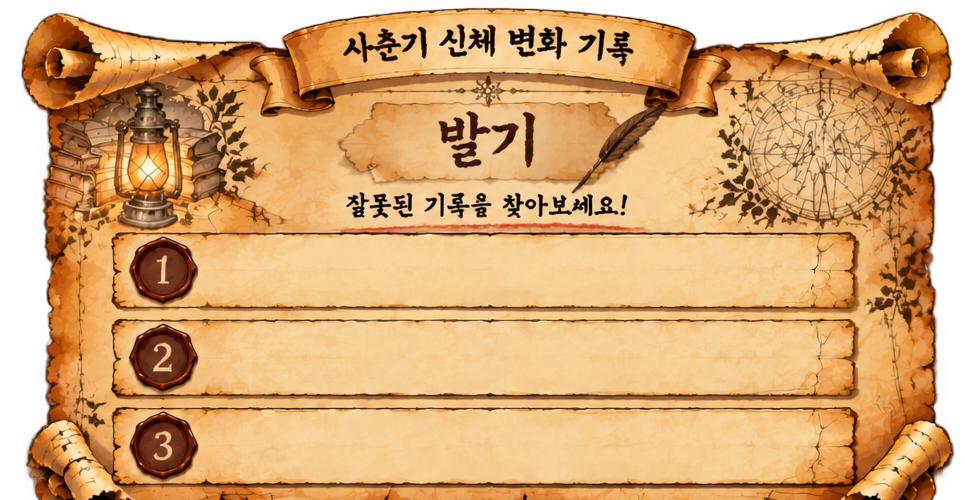

사서의 두 번째 부탁
미션 2 · 잘못된 기록 찾기
책을 모두 잘 찾아주었군요!
사춘기와 관련된 오래된 문서를 발견했어요!
고문서 속 잘못된 설명을 찾아 주세요.
기록 살펴보기 ▶
미션 2 · 잘못된 기록 찾기 1 / 3
고문서 속 잘못된 설명을 하나 찾아주세요!

이 창을 2구역 통합 화면에서 열면 마을지도로 돌아갈 수 있어요.
정답 확인
정답이에요!
잘못된 기록을 찾아냈어요.
다음 고문서 보기 ▶